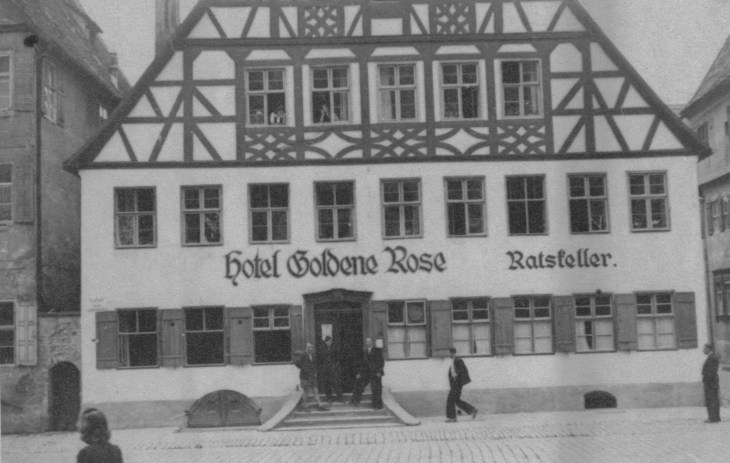
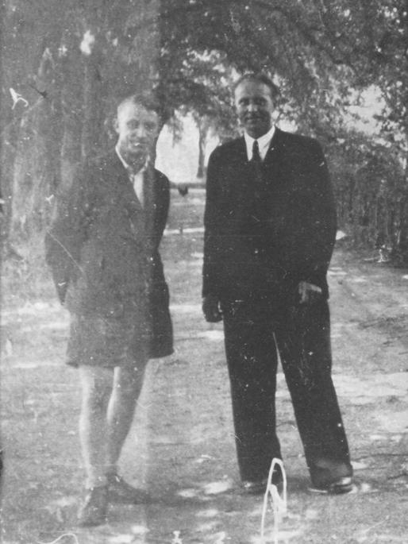
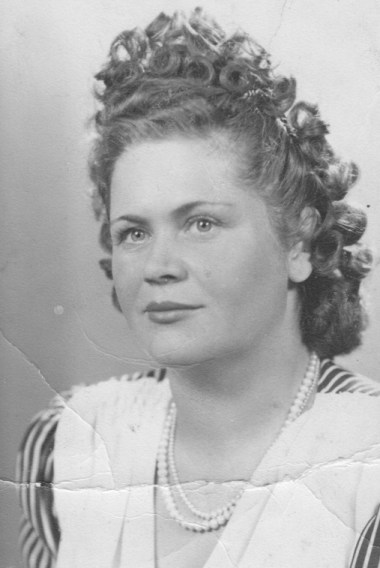

DP camps in Dinkelsbühl, Bavaria 1945-1949:
5 May 1945: In a report of Headquarters Military Government - US-Army on Displaced Persons (Kreis DINKELSBUEH) TOTAL 6081 persons of different nationalities were mentioned.
Soon this high number of people was reduced by transporting a lot of them to other DP camps in the neighborhood in Bavaria.
So in a continued report on DPs in centers in Dinkelsbuehl and immediate vicinity, TOTAL 627 persons were registered.
The different places of the DP camps in Dinkelsbuehl:eHotels:
Dutsches Haus (German House)
Goldene Rose (Golden Rose)
Weisses Ross (White Horse): Here were the Lettish DPs.Guesthouses:
Dinkelbauer (Spelt Farmer)
Brauner Hirsch (Brown Deer)
Kornschranne (Grain House)Schools: - Former Oberrealschule (Secondary School)
Today Vocational School, Noerdlinger Strasse 22
- Former Fliegerschule ( Flying School) - Then Hats-Factory Peschel -
Today City's Department for Elecricity, Rudolf-Schmidt-Strasse 7Other housings:
From Dinkelsbühl, Germany - 1946 retrieved 01.06.26.
- Bahnhofsrestauration - (Im Knabsaal), Luitpoldstrasse 19:
Here were accommodated the Lithuanian DPs.
- Private house, former brush factory: Noerdlinger Strasse 52:
Here lived the Ukrainian DPs.
